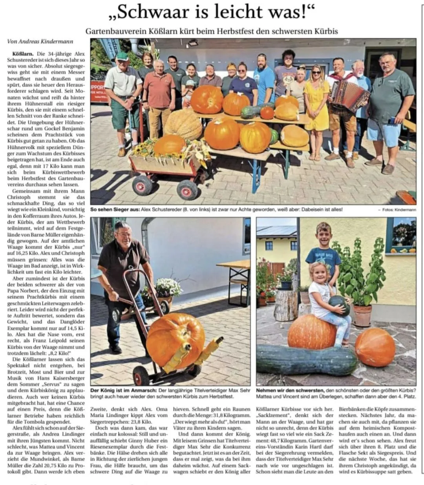
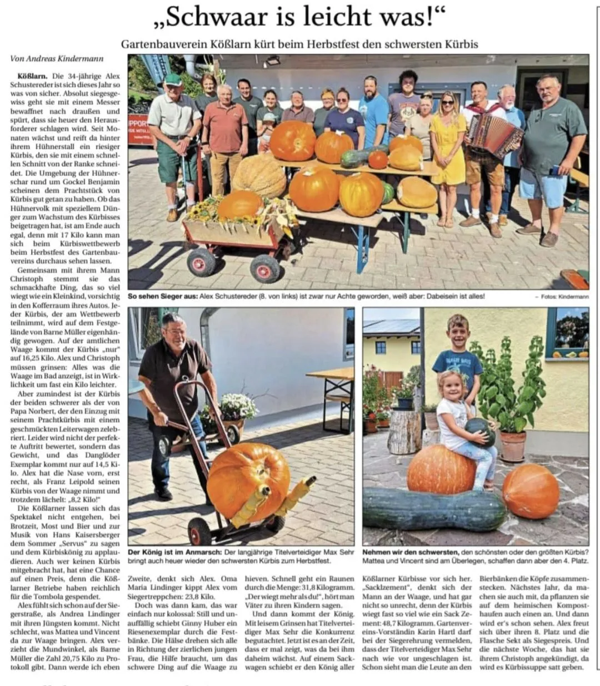

Herbstfest
Wir laden herzlich zu unserem Herbstfest ein. Ein Highlight ist wie jedes Jahr das Kürbiswiegen.
location Anfahrt planen
Wir laden herzlich zu unserem Herbstfest ein. Ein Highlight ist wie jedes Jahr das Kürbiswiegen.
location Anfahrt planen 

Ja, jeder Hobbygärtner ist herzlich eingeladen, seinen Riesenkürbis wiegen zu lassen. Eine Anmeldung ist vor Ort möglich.
Ja, das Fest findet bei jeder Witterung statt. Bei schlechtem Wetter bieten wir überdachte Sitzmöglichkeiten an.
Selbstverständlich! Es gibt diverse Schmankerl sowie Kaffee und Kuchen. Auch für Getränke ist bestens gesorgt.